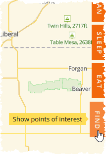
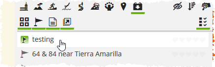

Here are some notes about the interaction with Furkot trip planner widget for the Chasing Blue Sky map.
Please note that "expectations" might not match reality of what's offered by Furkot's API.
Expected behavior for all "add to Furkot links" using trip planner widget integration:
| Status | Scenario | Example | Actual Results | Workaround |
|---|
|
Single Stop |
North Cochetopa Pass, CO
| As expected. |
--- |
|
Multi-Stop (6) |
Northern New Mexico Loop |
- Opens onsite dialog, but does not add stops.
|
Copy link and go to in browser. Stops are added but:
- Not in the order provided; user would have to reset order. How to force a particular order?
- Hides some but not all passthrough points. How to make them be hidden? Stop duration is already set to 0 and pin is already set to passthrough.
|
|
Multi-Stop (2), with Route Polyline, route type = THROUGH |
Devil's Highway, AZ |
- Opens Furkot UI instead of onsite dialog.
- Makes ROUTING for last stop (the one associated with the polyline) as Offroad Routing, which in turns sets duration to having to be manually calculated.
|
- Onsite dialog is the preferred handling for all scenarios, but UI is workable if that's how it is supposed to be working per Furkot's end.
- Having to manually edit each route to switch from offroad* to follow roads is a bit inconvenient, but doable. Add note about this to CBS map instructions.
|
|
Multi-Stop (2), with Route Polyline, route type = ONEWAY |
Sky Island Scenic Byway, AZ |
- Opens Furkot UI instead of onsite dialog.
- Makes ROUTING for last stop (the one associated with the polyline) as Offroad Routing, which in turns sets duration to having to be manually calculated.
|
- Onsite dialog is the preferred handling for all scenarios, but UI is workable if that's how it is supposed to be working per Furkot's end.
- Having to manually edit each route to switch from offroad* to follow roads is a bit inconvenient, but doable. Add note about this to CBS map instructions.
- Becomes undoable with routes with lots of stops and/or longer tracks.
|
|
Multi-Stop (2), with Route Polyline, route type = LOOP |
San Juan Skyway Scenic Byway, CO
|
- Opens Furkot UI instead of onsite dialog.
- Makes ROUTING for last stop (the one associated with the polyline) as Offroad Routing, which in turns sets duration to having to be manually calculated.
|
- Onsite dialog is the preferred handling for all scenarios, but UI is workable if that's how it is supposed to be working per Furkot's end.
- Having to manually edit each route to switch from offroad* to follow roads is a bit inconvenient, but doable. Add note about this to CBS map instructions.
- Becomes undoable with routes with lots of stops and/or longer tracks.
|
|
Multi-stop (4) and Route Polyline, route type = LOOP |
San Juan Skyway Scenic Byway, CO |
- Opens Furkot UI instead of onsite dialog.
- Makes ROUTING as Offroad Routing, which in turns sets duration to having to be manually calculated.
- Routes fine between stop 1 / start (Ridgway) and stop 2 (Rico), between Rico and stop 3 (Durango), but then skips going from Durango to end / stop 4 (Ridgway again) and runs entire polyline line route.
|
- Onsite dialog is the preferred handling for all scenarios, but UI is workable if that's how it is supposed to be working per Furkot's end.
- Having to manually edit each route to switch from offroad* to follow roads is a bit inconvenient, but doable.
- After changing ROUTING to follow roads things then get really wonky.
- Becomes undoable with routes with lots of stops and/or longer tracks.
|
|
TripShot Widget |
Northern New Mexico Loop |
|
This seems to be the best option, but will take some user gyrations.
- Click the Plan with Furkot link in upper right corner of tripshot widget. Opens Furkot UI.

- When prompted to create your own version of a trip {trip name}, click OK. This will create and display your copy of the trip.
- If you're just starting your trip planning and this is the first thing you've added and you don't care to save the route as a separate entity all its own, you can start adding other stops and routes to this trip.
- Otherwise, continue below to add this route to a a different trip (existing or new).

- Click the My Trips tab.

- Open (or create) the trip to which you wish to add the route.
- Click the Find tab.

- Click the My other trips, routes and tracks icon.

- Click the Show all places icon, if not already enabled.

- You should see the route, probably with a car icon unless another mode of travel was specified. If you have a lot of other trips and places you might have to scroll around to find it.

- Click the desired route to add.

- Click the Route option to add all stops it in the order provided, OR click the Backtrack icon to add all stops in reverse order. (NOTE: clicking the Stop or Maybe options add a stop to your trip plan but then cannot be deleted or manipulated so we do not suggest using them.)

|
|
General Note |
If an onsite dialog is used to add stops, then the UI is opened (or vice versa) to add a multi-stop or route, or to make changes, but not closed then later trying to add new multi-stops or routes opens the window but doesn't add the stops/routes. |
Close the UI after each use. Add note about this to CBS map instructions. |
* Guessing this is because it's using the polyline route provided, which because it has to be a smallish number of tracks (thus is not high detail) in order to pass it through via HTTP, it is indeed frequently "off road".
e.g. San Juan Skyway gpx generated via RideWithGps has 14K track points and produces a beautifully anchored-to-the-road track in the CBS map but can't be successfully transferred as a polyline to Furkot (server closes connection, assumption is that the allowed request size is being exceeded).
Alternately, a gpx for the exact same route generated via Furkot itself and exported has only 450 tracks, so of course doesn't follow the road as closely, but can be successfully passed as a polyline back to Furkot.
Limit is reached, however, somewhere between 450 and 750 tracks as the Northern New Mexico Loop has 750 tracks (and more routing waypoints and a longer name, it all adds up) and that returns the server closed connection message. Exploring alternatives suggested that use of the TripShot widget would be the best solution for CBS's needs.